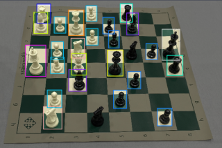
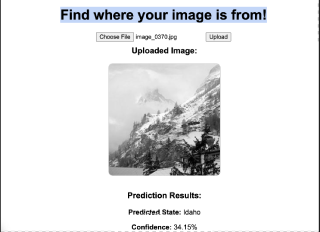

Chess Bot
Developed a chess bot that interacts with a real-life
chessboard using computer vision to track piece positions.
The system employs deep learning to classify piece types and their movements accurately.
Additionally, the AI analyzes the board state and suggests optimal next move.
Read more

Geoguesser bot
Developed a geoguesser bot with a custom AI that uses computer vision to
analyze photos and predict their geographic location. The bot incorporates deep learning techniques
for image recognition and geolocation. Additionally, a user-friendly frontend was created
to allow users to interact with the bot, and view its predictions
Read more